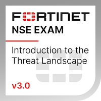
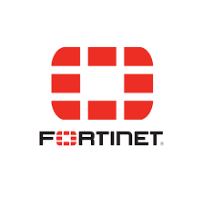
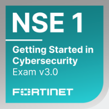
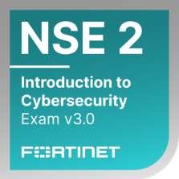
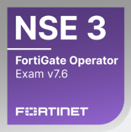

Maksym Tsybulskyi
Senior Systems & Cybersecurity Administrator
Certificates

FCF - Introduction to the Threat Landscape 3.0
FCA - FortiGate 7.4 Operator
FCF - Getting Started in Cybersecurity 3.0
Technical Introduction to Cybersecurity 3.0.pdf
FCA - FortiGate 7.6 OperatorSummary
Senior IT and Cybersecurity professional with 20+ years of experience designing, deploying, and securing enterprise infrastructure across healthcare, retail, and corporate environments. Proven track record of building multi-site networks, implementing security architectures, and modernizing IT operations through automation and cloud technologies.
Experienced in network architecture, firewall and VPN deployment, Linux server administration, virtualization, containerization, and infrastructure monitoring. Strong background in cybersecurity operations, risk mitigation, intrusion prevention, and security policy development.
Led infrastructure initiatives including Fortinet firewall deployments, Proxmox virtualization, Docker/Kubernetes environments, centralized monitoring with Grafana/Prometheus, and automation using Ansible and Terraform. Successfully managed large distributed environments with dozens of servers and multiple branch locations, ensuring high availability, security compliance, and operational efficiency.
Recognized for leading IT teams, driving digital transformation projects, and improving infrastructure resilience and security posture while maintaining stable day-to-day operations.
Focused on delivering secure, scalable, and automated systems that support business growth and operational excellence.
Sincerely,
Maksym Tsybulskyi
Last updated:
Work Experience
Senior Systems & Cybersecurity Administrator
USKO Inc · Full-time · Sacramento, USA · 08/2025 – Present
- Designed and deployed Fortinet (FortiGate) firewall infrastructure across headquarters and two branch offices, implementing security policies, network segmentation, and IPSec site-to-site VPN tunnels to ensure secure and reliable inter-site connectivity.
- Administered and maintained enterprise IT infrastructure, ensuring system stability, security, and high availability across network and server environments.
- Identified, analyzed, and mitigated network and infrastructure risks through proactive monitoring, vulnerability assessment, and security controls.
- Evaluated and reviewed system architectures to ensure compliance with organizational security standards, industry best practices, and infrastructure design principles.
- Monitored system performance and conducted capacity planning, optimizing infrastructure resources to maintain reliability and scalability.
- Developed monitoring dashboards and alerting systems using Grafana to provide real-time visibility into infrastructure performance and operational metrics.
- Monitored system logs, network traffic, and anomaly patterns to detect potential security incidents, intrusions, and operational issues.
- Developed and documented IT security policies and procedures, communicating security standards and best practices across the organization.
- Develop educational materials and training programs aimed at increasing user awareness, promoting safe email practices, and reducing organizational exposure to social engineering and other cyber risks.
Senior Systems Administrator
USKO Inc · Full-time · Sacramento, USA · 07/2023 – 08/2025
- Split services into VMs (Proxmox) and Docker Compose/Swarm for the entire service.
- Maintained VLANs, servers, IP phones, PCs.
- Patch management & updates across infrastructure.
- Implemented Grafana/Prometheus.
- Implemented Intrusion Prevention Systems and Web Application Filtering.
- Setting NGINX as a web/reverse proxy server.
- Created routing of one global Company network from several locations.
- Daily routine automation with Ansible.
- Maintained AD, SSL certs, MySQL, backups.
Information Technology Specialist
Magma Line Inc · Full-time · Sacramento, USA · 02/2023 – 07/2023
- Maintained and updated company e-commerce website, ensuring uptime, performance, and secure transactions.
- Administered web server, including deployment, configuration, monitoring, and routine maintenance.
- Managed IT infrastructure including routers, switches, and wireless access points, to ensure reliable network connectivity.
- Performed troubleshooting for network, server, and website issues, minimizing downtime.
- Implemented updates, backups, and security measures for web and network systems.
Senior System Engineer
City Clinical Hospital 10 · Part-time · Odesa, Ukraine · 06/2021 – 02/2022
- I participated in the initial digitalization of hospital operations by designing and implementing the foundational IT infrastructure to support modern healthcare information systems.
- Planned and supervised the construction of the hospital’s local area network (LAN) architecture, connecting administrative departments, medical staff workstations, and clinical systems.
- Selected and procured active network equipment, including routers, managed switches, and wireless access points, based on reliability, scalability, and cost efficiency.
- Provided technical guidance to hospital administrators regarding infrastructure development, equipment procurement, and future phases of IT implementation.
- Prepared documentation, including network diagrams, equipment inventories, and system configuration records.
Head of IT Department / Cyber Security Architect
Clinic of Saint Catherine · Full-time · Odesa, Ukraine · 12/2012 – 03/2023
- Architected and deployed enterprise-grade IT infrastructure for a hospital and four satellite branch locations, ensuring reliable connectivity, system availability, and secure data flow across all sites.
- Led cloud migration and modernization initiatives using AWS, Kubernetes, and Vodafone Cloud, improving scalability, system resilience, and operational efficiency.
- Led and managed an IT team of four technicians and engineers, coordinating daily operations, assigning priorities, and ensuring timely resolution of technical issues
- Designed and implemented containerized environments with Kubernetes, enabling efficient workload orchestration and streamlined application deployment.
- Automated infrastructure provisioning, configuration management, and deployment processes using Python, Terraform, and Ansible, significantly reducing manual intervention and operational errors.
- Administered and maintained 30+ Linux servers and database systems, handling system monitoring, patch management, performance tuning, and security hardening.
- Implemented centralized logging, monitoring, and alerting solutions to ensure proactive infrastructure management and rapid incident response.
- Designed network architecture supporting multiple locations, including secure VPN connectivity, firewall configurations, and traffic optimization.
- Deployed and managed a FreePBX-based call center platform, integrating call analytics, reporting dashboards, and performance tracking to improve operational insights.
- Collaborated with cross-functional teams including developers, network engineers, and hospital administrative staff to deliver reliable and scalable IT solutions.
- Ensured compliance with data protection and security best practices, particularly for sensitive healthcare data and internal communications.
Head of IT Department
Retail Stores “Virtus” · Full-time · Odesa, Ukraine · 05/2010 – 10/2012
- Designed, implemented, and maintained the IT infrastructure for company headquarters and 19 retail stores located across multiple cities, ensuring reliable connectivity and centralized system management.
- Planned and deployed enterprise network architecture, including configuration and administration of routers, managed switches, and wireless access points.
- Implemented and maintained site-to-site secure connectivity using IPsec VPN tunnels to connect all retail locations with the central office network.
- Managed and maintained distributed retail databases used for product inventory, pricing, and sales synchronization between headquarters and store locations. Coordinated with vendors and service providers.
- Led and supervised an IT support team of 8 technicians, coordinating daily operations, assigning tasks.
Chief Engineer
Security Systems Integrator “Agent-SB” · Full-time · Odesa, Ukraine · 01/2006 – 06/2010
- Installed, configured, and integrated physical security systems including IP video surveillance (CCTV), access control systems, intrusion detection, and alarm systems for commercial and enterprise environments.
- Performed system design and deployment based on customer security requirements, including camera placement, network topology, and access control architecture.
- Configured and maintained video management systems (VMS), recording servers, and storage solutions for surveillance environments. Installed and programmed access control hardware such as card readers, controllers, electronic locks, and badge management systems.
- Created system documentation including network diagrams, installation records, and configuration documentation.
Skills
- Linux: Ubuntu, Debian, Arch, Linux Mint, CentOS, FreeBSD, Kali
- MS Windows Server 2003 - 2022: AD, DNS, GPO, SMB
- Networking: Subnetting(VLANs), Routing vs. switching, DNS, DHCP, NAT, IPSec, OSI & TCP/IP models, IP addressing (IPv4, IPv6)
- IaC: Terraform
- SQL: MySQL (MariaDB), MS SQL Server
- Scripts: Python3.x
- Version Control System: Git, GitHub
- Containers: Docker, Docker Compose
- Clouds: AWS (Iaas, Paas, SaaS), Vodafone
- Configuration Management: Ansible
- Virtualization: VMware, Oracle VM Virtual Box, Vagrant, ProxMox
- Web server: NGINX
- Orchestration: Docker Swarm
Basic skills
- CI/CD: Jenkins, Git Lab, GitHub
- Scripts: Bash, Pearl
- Web server: Apache
- Orchestration: Kubernetes
- Observability: Logging with ELK Stack
- WSGI: Gunicorn+Flask
- Synchronization: Rsync
Soft skills
- Time management
- Critical thinking
- Organizational
- Adaptability
- Stress management
- Teamwork